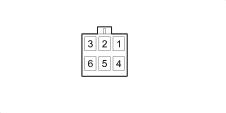

H060 SUN ROOF SWITCH (SUN ROOF BRIDGE)
- Path
- Electrical equipment > 3 CONNECTORS > H MANUAL ELECTRIC CONTROLS > H060 SUN ROOF SWITCH > H060 SUN ROOF SWITCH (SUN ROOF BRIDGE)
- Kind
- connector pinout (pin -> wire colour -> other end)
- Applies to
- all engines; all production periods; only with equipment: Powered sunroof
- Interactive page
- https://sloeber94.github.io/elrnDB/alfa/159/en/#/939004092
Applies to: all engines; all production periods; only with equipment: Powered sunroof

Wiring | Colour |
|---|---|
Pin | Cable | Destination | |||
|---|---|---|---|---|---|
Sec.. | Colour | Node | Connect. | Pin | |
1 | H (grey) | 1 | |||
2 | V (green) | 2 | |||
3 | G (yellow) | 3 | |||
5 | C (orange) | 4 | |||
6 | B (white) | 5 | |||